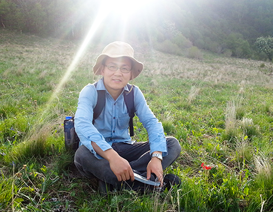

Contact:
Address: 132# Lanhei Road, Heilongtan, Kunming 650201, Yunnan, China
Hi, I'm ZHANG Rong!
I am a postdoc fellow in the Prof. Ting-Shuang Yi's Lab at Kunming Institute of Botany, Chinese Academy of Sciences. I am broadly interested in evolutionary biology, phylogenetics, and plant taxonomy, especially in Fabaceae. My current researches mainly focus on: 1) reconstructing phylogenetic relationships in legumes using plastomes, mitochondrial genes and nuclear genes which produced by long PCR, genome skimming, transcriptome and hybrid capture sequerencing; 2) identifying the factors that lead to phylogenetic incongruence; and 3) identifying the pattern of legumes diversification and time-space shifts of different lineages, exploring the factors leading to Leguminosae diversification ( more details).